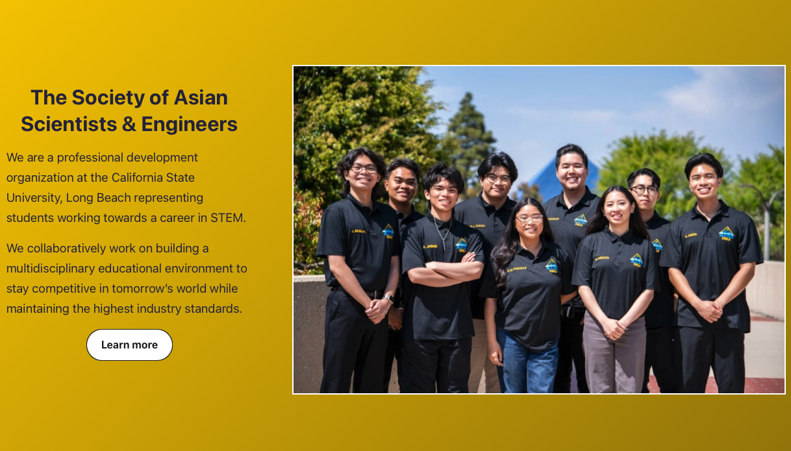
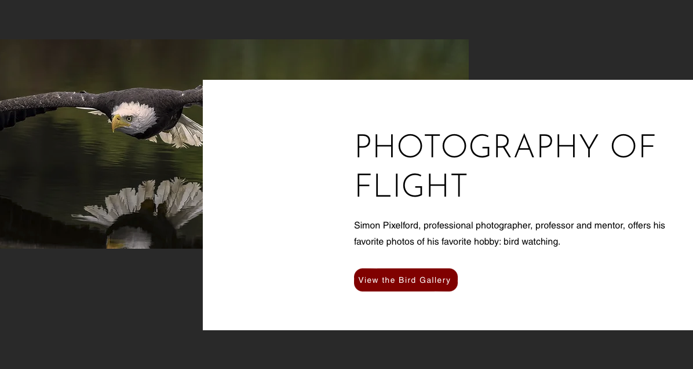

Projects
Project 1 - eResume (HTML, CSS, JavaScript)
- Integrated HTML, CSS and JavaScript to create my online resume.
- Included link integration as well as JavaScript icons to ensure an easy-to-navigate UI.
- Implemented resume website practices to ensure that it fits the criteria of an online resume.

Project 2 - CSULB SASE Website (WordPress)
- Integrated WordPress to create a website that lays out vital information regarding the CSULB chapter of the Society of Asian Scientists & Engineers.
- Included link integration extensions as well as formatting layouts to exhibit a dynamic and user-friendly interface.
- Implemented HTML & CSS to style the overall theme to capture the theme of our organization.

Project 3 - Pixelford Photography (WiX)
- Incorporated custom galleries, high-resolution images and responsive design elements to ensure optimal performance across devices.
- Utilized custom HTML, CSS, and JavaScript within WiX platform to tailor the site's authentic and functionality.
- Implemented parallax scrolling, interactive elements and seamless navigation to elevate user engagement.
- Integrated 3rd party applications and WiX Code (Velo) to enhance functionality, including dynamic content management and personalized user interactions.
Project 4 - Music Lovers (JavaScript)
- Developed using React Native, Figma, and Firebase, it seamlessly integrates Spotify's API for an extensive music library experience.
- Responsible for developing and integrating the Firebase database, ensuring secure storage of user data including personal information, followers, and search results.
- The application's core functionality revolves around Spotify's API, allowing users to search and discover music seamlessly.
- By leveraging familiar interface elements from Instagram, Music Lovers aims to provide an intuitive and enjoyable experience, driving user engagement and traffic.